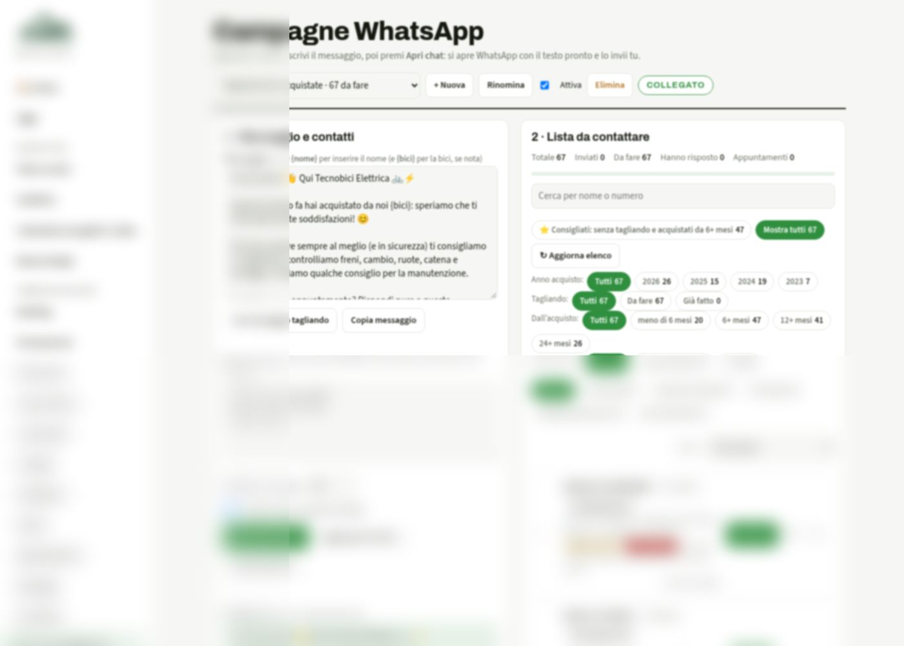
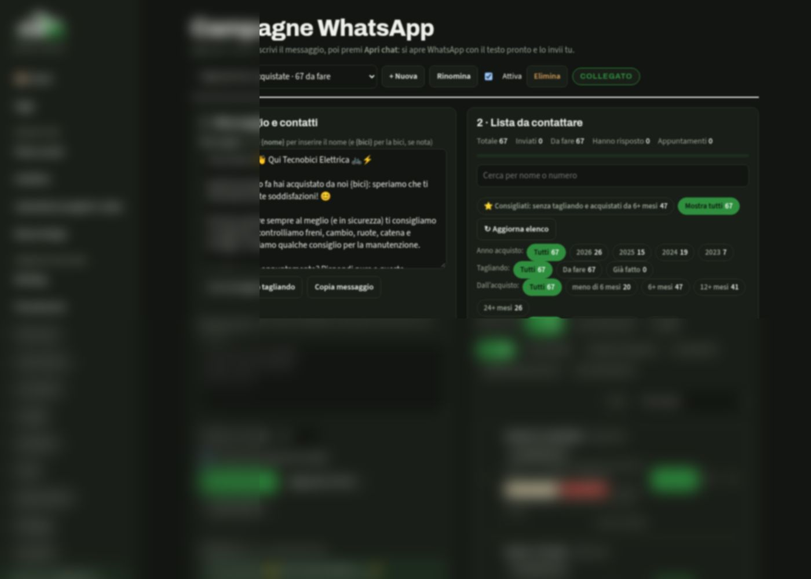
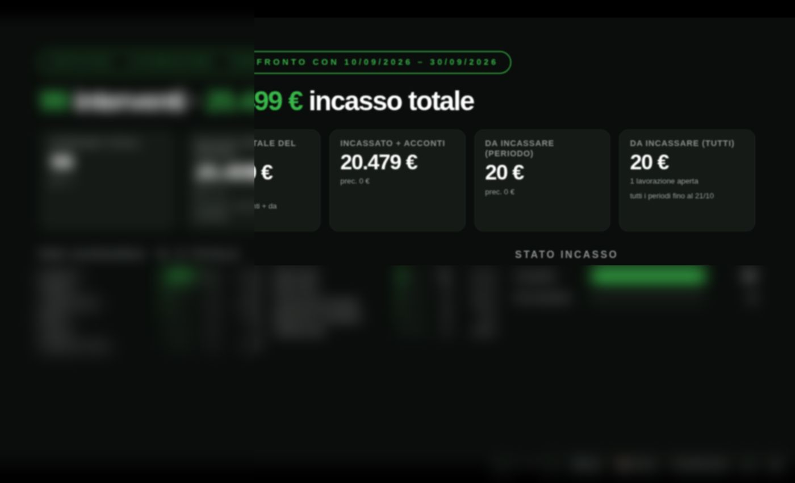
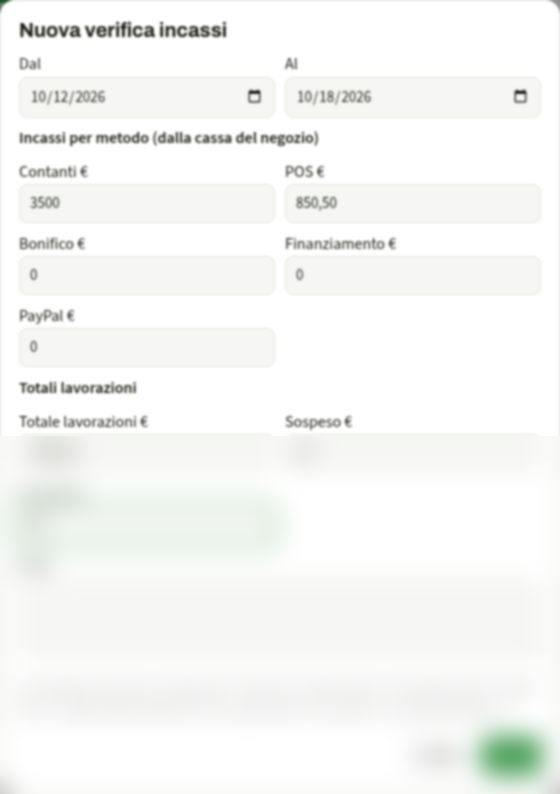
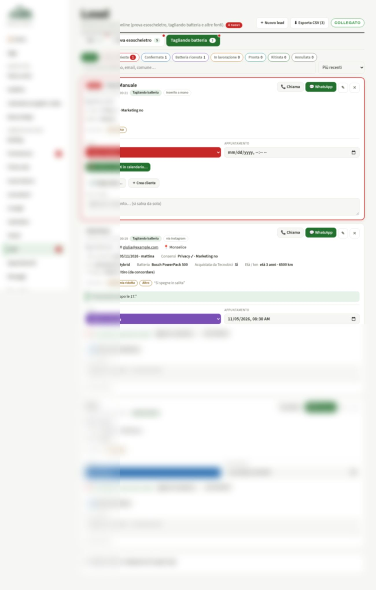

Prodotto interno multi-dispositivo: archivio clienti, prenotazioni lead, autenticazione e filtri agente. Le schermate qui sotto sono oscurate: nessun dato cliente reale.





Demo grafica per portfolio. L’app operativa resta privata su Render.